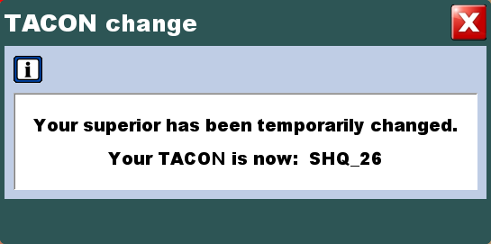
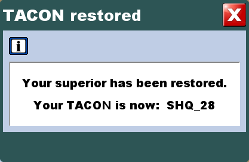

During a task order in progress, a pop-up window opens on the Field Unit Operator screen to
indicate that the Field Unit task is temporarily controlled by a new Command Center.
Figure: TACON change

Another pop-up window opens when the initial Command Center is restored.
Figure: TACON restore

Note:The current TACON can be seen in the [UNIT
INFORMATION] window.